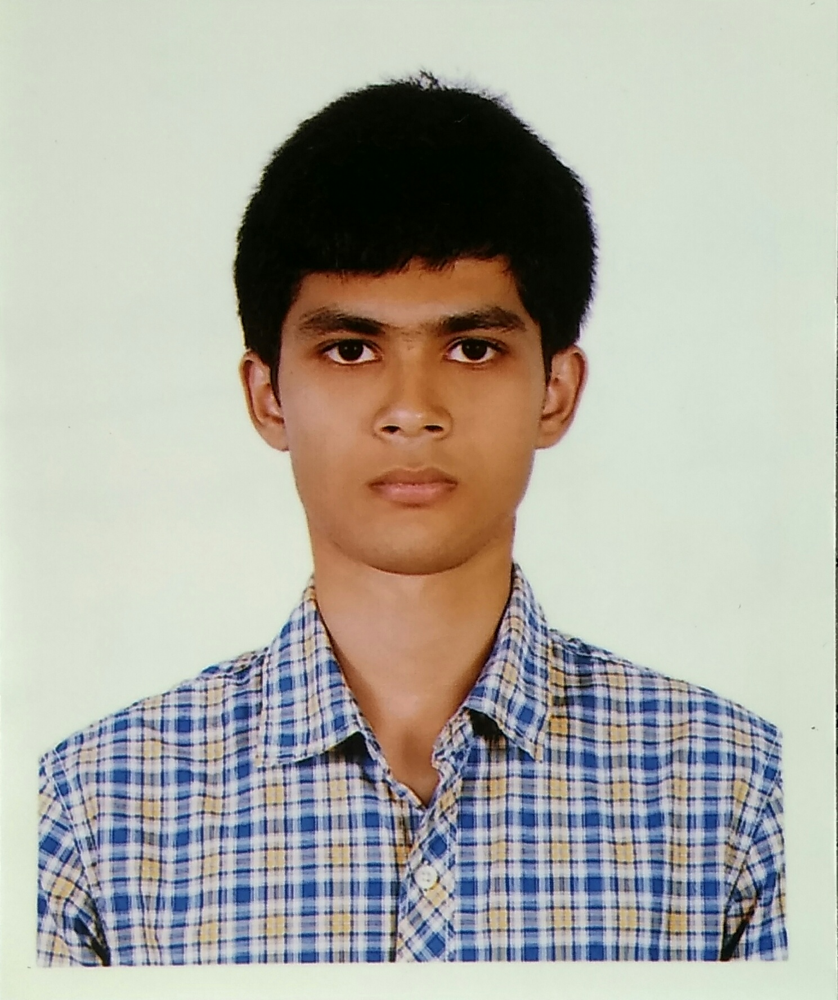

Sayed Shifat Ahmed M.Sc. (EEE), B.Sc. (EECE)
Lecturer, department of Electrical and Electronic Engineering (EEE) at RTM Al-Kabir Technical University, with academic and research interests in Electromagnetics, Microwave Engineering, Antenna Designing, Biomedical Engineering, Photonics, IoT and Microcontroller Embedded Systems.
35+ publications · 10+ projects

M.Sc.
Rajshahi University of
Engineering & Technology (RUET)
B.Sc.
Pabna University of
Science & Technology (PUST)
Faculty
RTM Al-Kabir Technical
University (RTM-AKTU)
BACKGROUND
Where I come from, and why it matters.
An Electrical and Electronic Engineering scholar and educator, Sayed Shifat Ahmed centers his research and academic career on exploring and manipulating the electromagnetic principles driving global communication networks, guided by a profound curiosity about the unseen forces that connect our modern world. Growing up in the crowded urban landscape of Rajshahi, Bangladesh, he frequently observed how the city’s dense layout and towering architecture disrupted his handset's network coverage. Looking at these physical barriers through the lens of urban planning, he began to question the unseen mechanics of wireless propagation. This spark of curiosity quickly grew into a lifelong academic pursuit; his fascination with the invisible world of electromagnetic waves has shaped his journey into Electromagnetics, Microwave Engineering, and Antenna Design. Driven by a desire to understand how electromagnetic fields interact with materials and transform the way we communicate and sense our surroundings, he explores innovative electromagnetic radiator structures and their potential applications in wireless communication, sensing, and beyond.
His academic foundations were established at Pabna University of Science and Technology (PUST), where he completed his B.Sc. in Electrical, Electronic and Communication Engineering (EECE) in 2024 under the supervision of Professsor Liton Chandra Paul. During his undergraduate studies, he developed a foundational interest in antenna design and wireless communications, particularly microstrip patch antennas, MIMO systems, THz antennas, and V2X technologies . Following his undergraduate studies, he enrolled in the M.Sc. program in EEE at Rajshahi University of Engineering & Technology (RUET) in 2024 under the guidance of Professor Ajay Krishno Sarkar in Biomedical field. Alongside his postgraduate studies, he joined in the EEE faculty at RTM Al-Kabir Technical University (RTM-AKTU), Sylhet as a Faculty member in 2024, where he continues to serve while pursuing his academic and research interests. He completed his M.Sc. in 2026, further strengthening his commitment to teaching, research, and the development of future engineers.
Since childhood, Sayed has been fascinated by robotics and intelligent machines, a passion that gradually evolved into an academic interest in automation and autonomous vehicles. Over time, his research expanded into microcontroller-based embedded systems and the Internet of Things (IoT), focusing on how intelligent systems interact with and respond to their surroundings. Today, his cutting-edge research bridges the gap between electromagnetic engineering and transformative technologies—spanning from the submillimeter (THz) domain of Photonics, where he designs advanced THz meta-absorbers, to Bio-medical Engineering, where he applies his antenna expertise to non-invasive tumor detection systems. By integrating wireless hardware design, smart automation, and photonics, Sayed is actively engineering solutions for a smarter, safer, and more connected future.
"The purpose of a university is to make students safe for ideas — not ideas safe for students." — Clark Kerr
2020(Result in 2024)→
B.Sc. in EECE, PUST, Pabna, Bangladesh.
2024 →
Lecturer, Dept. of EEE, RTM-AKTU,
Sylhet, Bangladesh.
2026→
M.Sc. in EEE, RUET, Rajshahi, Bangladesh.